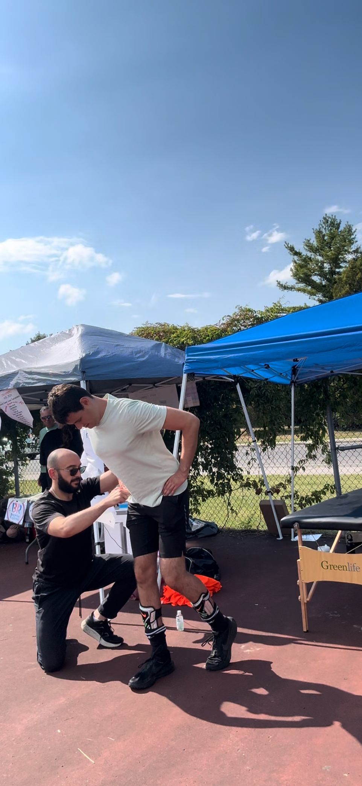

In-person coaching Montreal
Hands-on coaching in the gym with me. For you if:
- You want a more hands-on coaching style
- You’re pretty new to strength training
- You value the accountability of having someone in the gym with you
- You can commit to a regular, consistent schedule